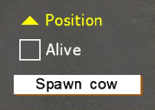
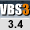

Dialogs Statebox
Introduction

Stateboxes were introduced in V3.4, and are checkboxes that can have multiple states (which are indicated by different icons).
Related commands: Interactions - User Dialogs - Stateboxes
Demo mission: Dialog Statebox.zip
Usage
Clicking on a statebox control will cause it to cycle through its available modes. These modes are defined by the 'stateIcons' array, which contains a list of images. State 0 corresponds to the first icon, state 1 to the 2nd, and so on.
Clicking the left mouse button will go to the next image, clicking the right button will go to the previous one (wrapping around at either end).
The current state (index) can be read via the sbGetCurrentState command.
Properties
Only properties unique to this control type are listed. For general properties, see the Properties page.
If a property doesn't have a default value, then it must be defined explicitly.
|
Name |
Type |
Default |
Remark |
Script |
|
type |
- |
must be 112 (or CT_STATEBOX, if using constants) |
- |
|
|
style |
- |
Display options:
|
- |
|
|
iconW, iconH |
0 |
Width and height of the icon. (If either is undefined, or 0, then no icon is shown.) |
- |
|
|
iconLeft |
1 |
If 0, then icon will be right-aligned within the control. If 1, it is left-aligned. |
- |
|
|
colorText |
- |
Color of text label, when it has neither focus, nor is it active. |
ctrlSetTextColor (V3.6+) |
|
|
colorTextActive |
- |
Color of the text when mouse is over this control. |
ctrlSetActiveColor (V3.6+) |
|
|
colorTextFocused |
- |
Color of the text when control has focus. |
- |
|
|
colorTextDisabled |
- |
Color of the text when control is disabled. |
- |
|
|
colorIcon |
- |
Regular color of the icon (when it has neither focus, nor is it active). |
ctrlSetTextColor (V3.6+) |
|
|
colorIconActive |
- |
Color of the icon when mouse is over this control. |
ctrlSetActiveColor (V3.6+) |
|
|
colorIconFocused |
- |
Color of the icon when control has focus. |
- |
|
|
colorIconDisabled |
- |
Color of the icon when control is disabled. |
- |
|
|
colorBackground |
{0,0,0,0} |
Color of the control's background. (Only available since V3.6) |
||
|
stateIcons |
{} |
List of paths to PAA images (or Procedural Textures), to cycle through when control is clicked. If empty, then no control (not even the text label) is shown. |
||
|
text |
"" |
Text label to show next to icon. |
Event Handlers
An event handlers can be assigned to a statebox, to fire when it is clicked ('onStateBoxToggle').
Check Reference List for details.
Example
The mission Dialog Statebox.zip contains a demonstration of the example shown on the right.
Open with createDialog "Dlg" class Dlg { idd = 20000; movingEnable = 1; class controls { class CHK1 { type = 112; // CT_STATEBOX style = ST_LEFT; // or ST_RIGHT, ST_CENTER (text alignment relative to box) idc = 20000; x = .4; y = .6; // position w = .2; h = .036; // size iconH = .04; // height of icon iconW = .03; // width of icon iconLeft = 1; // 1: icon on left, 0: icon on right sizeEx = .036; text = "Position"; font = "TahomaB"; colorText[] = {1,1,1,1}; // Regular color of the text colorTextActive[] = {1,1,0,1}; // Color of the text when mouse is over this control colorTextFocused[] = {1,0.5,0,1}; // Color of the text when control has focus colorTextDisabled[] = {0.8,0.8,0.8,1}; // Color of the text when control is disabled colorIcon[] = {1,1,1,1}; // Regular color of the icon colorIconActive[] = {1,1,0,1}; // Color of the icon when mouse is over this control colorIconFocused[] = {1,0.5,0,1}; // Color of the icon when control has focus colorIconDisabled[] = {0.8,0.8,0.8,1}; // Color of the icon when control is disabled // four icons to cycle through (containing arrows pointing up, right, down, left) stateIcons[] = {"\vbs2\ui\data\vbs3_sortingUp_ca.paa","\vbs2\ui\data\vbs3_sortingRight_ca.paa","\vbs2\ui\data\vbs3_sortingDown_ca.paa","\vbs2\ui\data\vbs3_sortingLeft_ca.paa"}; }; class CHK2 : CHK1 { idc = 20001; y = .656; text = "Alive"; // state icons are an empty and filled checkbox stateIcons[] = {"\vbs2\ui\Data\vbs3_checkbox_empty_ca.paa", "\vbs2\ui\Data\vbs3_checkbox_full_ca.paa"}; }; }; };